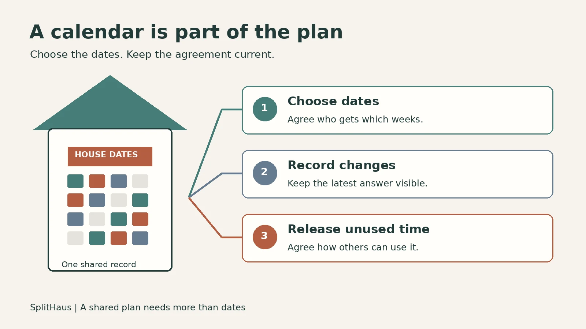

REVIEW DRAFT. Not published. Proposed byline: Dan, subject to his approval. Illustration is explanatory, not a product screenshot.
Google Calendar for a shared vacation home: when is it enough?
Short answer: A shared Google Calendar can work for a vacation home when your group already agrees on who gets which dates and is comfortable handling changes itself. Consider a dedicated shared-home calendar when choosing dates, keeping the rules current, and passing on unused time have become work your group wants help managing.

The summer calendar is filled in. Then one household gets different school dates, someone cannot make their July week, and another asks whether those nights are available. The calendar still shows the original plan. The latest answer is somewhere in the messages.
That can happen with any tool. The question is whether your family has a way to keep the plan current that people are willing to use.
If a shared Google Calendar already does that job, you may not need to replace it. If one person is constantly checking dates, chasing replies, and updating a second document, it is worth looking at the work around the calendar as well as the calendar itself.
When Google Calendar is enough
Google Calendar lets you share a calendar with specific people or groups and choose what they can see and edit. Its permissions distinguish between viewing availability, viewing details, editing events, and managing sharing.[1]
That gives a family a way to display an agreed schedule. It may be all you need when:
- Your group already knows how dates are divided.
- Everyone can find the calendar and understands what an entry means.
- You have a clear way to approve and record changes.
- Someone is comfortable keeping the calendar and any supporting rules up to date.
For example, two households might alternate weekends and take the same summer weeks each year. They agree on occasional changes directly, then update the calendar. There is no reason to add another product just because one exists.
If the dates themselves are still undecided, start with five ways to split a shared vacation home calendar. Choosing between fixed weeks, a rotation, a draft, open booking, or matching preferences comes before choosing where to display the result.
What a calendar entry does not decide
"July 10 to 16: Household A" tells everyone who is going. By itself, it does not explain how that household got the week or what should happen if it cannot come.
Your group still needs answers to questions such as:
- What happens when two households want the same dates?
- Does a missed week open to everyone, or does the household offer it first?
- Who can confirm a change, and who updates the record?
- Does giving up a holiday this year affect next year's turn?
You can handle these decisions through a shared document, spreadsheet, conversation, or another tool alongside Google Calendar. The tradeoff is that someone needs to keep those records in step.
Holiday rules deserve particular attention. Our guide to sharing the Fourth of July and other holidays includes rotation examples for three and four groups.
The plan has to stay alive all year
A calendar agreed in January will not anticipate every new job, illness, school commitment, or cancelled trip. Some weeks will go unused. That is normal; nobody needs to defend every change in their plans.
What helps is one current answer everyone can look up: who has the dates, what is available, and which changes have been agreed.
Whatever tool you use, decide:
- Where the current schedule lives. A message proposing a change should not be mistaken for a confirmed booking.
- Who records a confirmed change. Make that person's responsibility explicit, even if the households involved take turns doing it.
- How unused time becomes available. Write down the notice or release rule rather than deciding from scratch each time.
For the last question, see what to do when one family rarely uses the vacation home. Ask what is keeping people away before assuming a different booking rule is the answer.
One house, two ways to manage a change
This example is hypothetical, not a customer story or a product test.
Three households share a lake house. Households A and B both want the same July week. Their written rotation gives it to A this year. Later, A learns it cannot travel.
With Google Calendar and a written plan
The family checks the rotation and records A's week on its shared calendar. When A's plans change, it follows the family's agreed release rule.
Suppose that rule gives the other households until Sunday to express interest. B wants the week and C does not. The person responsible updates the calendar and confirms the change through the family's chosen channel.
That process can work. It relies on someone checking the rule, collecting the answers, and updating the final record. The Sunday deadline is this fictional family's rule, not a Google Calendar feature.
When evaluating SplitHaus
SplitHaus is built for groups sharing a vacation home. Its public site describes several ways to share time, including taking turns, drafting dates, booking open nights with limits, and collecting preferences.[2]
Use the same situation when evaluating it: can your group represent the arrangement it has agreed, see who has the week, and understand how a later change should be handled?
Do not assume that your family's Sunday deadline, an exception, or a particular approval rule will be handled automatically. Try the relevant workflow and check what still requires a conversation. A scheduling tool does not decide which rules your family should agree to.
Google Calendar or a dedicated shared-home calendar?
| Your group's situation | Where to start |
|---|---|
| Dates are already agreed and you mainly need a common view | A shared Google Calendar may be enough |
| You have not agreed how to divide time | Choose a scheduling approach before choosing software |
| You are happy managing requests and changes alongside the calendar | Keep that process, with a named person responsible for updates |
| One person maintains the rotation, messages, and calendar by hand | Evaluate a dedicated shared-home tool against those specific tasks |
| Unused weeks cause uncertainty | Agree a release rule, then check how your chosen tool supports it |
| You need a particular approval or notification behavior | Test that exact behavior rather than relying on a feature name |
The useful comparison is the amount and kind of work your group wants to do itself. There is little benefit in changing tools if the new arrangement leaves the same unanswered questions.
Before you switch, try this check
Ask each household where it would look to answer these questions:
- Who has the house for the next holiday?
- Where is the latest confirmed change?
- What happens to a week its household cannot use?
If everyone can find the same answers, your current process may be doing its job. If the answers depend on asking one particular person, start by writing the missing rule or responsibility down.
You can raise it without making the current organizer feel blamed:
"Could we make it easier for everyone to find the latest dates, so you don't have to keep answering for the rest of us? Which part would be most helpful to take off your plate?"
Try to avoid: "The calendar isn't working, so we need a new app."
A small agreement you can copy
Our current calendar. Confirmed stays are recorded in __. Proposed changes are agreed through _. The person responsible for updating the calendar is . When a household cannot use its dates, it . A change is final when ___.
The free Shared House Playbook helps your group write down its arrangements for time, costs, and care.[2] Pair the calendar agreement with a short set of family cabin rules so everyone also knows what to do during a stay and before leaving.
Frequently asked questions
Can we use Google Calendar for a shared vacation home?
Yes. Google supports sharing calendars and controlling viewing and editing access.[1] Your group can use it to display agreed stays, while deciding separately how requests, holidays, and unused weeks are handled.
Does changing calendar apps settle who gets the best weeks?
No. Your group still needs an agreed approach to dividing time. Compare tools by how they support that approach, rather than expecting software to settle a disagreement about the rules.
Should everyone be able to edit the shared calendar?
That depends on how your group records bookings. Google offers different access levels.[1] Give people the access needed for their role, and agree who can change confirmed dates. Avoid making private house schedules public just to make them easier to share.
When should we consider an alternative to Google Calendar?
Consider one when the surrounding work, such as maintaining a rotation or handling requests and changes, is more than your group wants to manage manually. Test it with a real scheduling question before moving everyone's plans.
Sources
[1] https://support.google.com/calendar/answer/37082?hl=en [2] https://www.splithaus.com